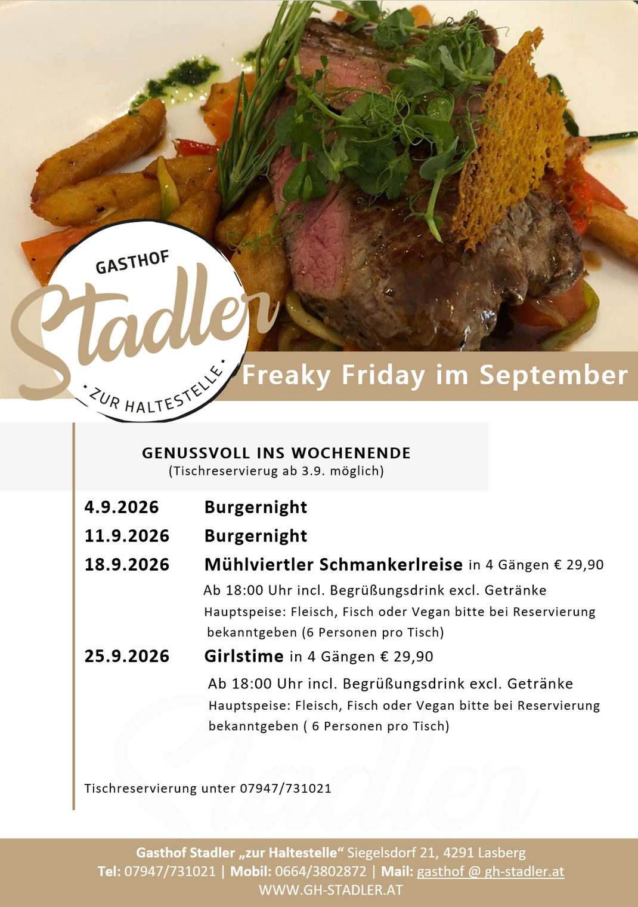
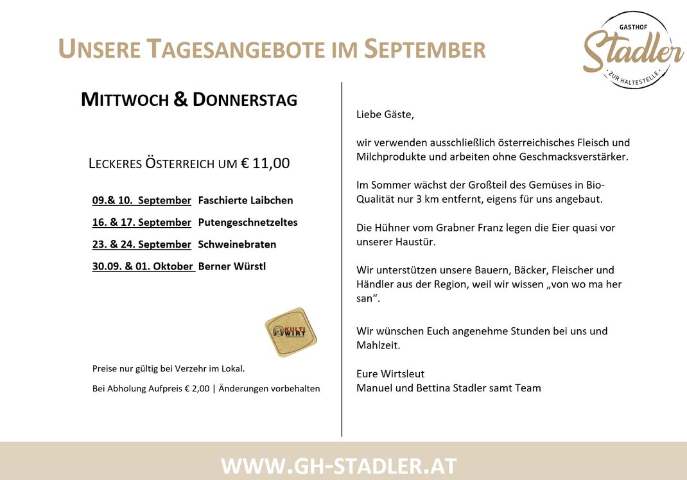

Das sind wir
Familie Stadler
Wir sind ein Familienbetrieb in Lasberg. Das Gasthaus wird in dritter Generation geführt – und wir können mit Stolz sagen, dass mittlerweile vier Generationen in unserem Haus leben und mithelfen.
Simon, Bettina, Manuel und Miriam Stadler.
Zeitleiste
Von Wittinghofer zu Stadler
- 1968Die Senior-Wirtsleute Mitzi und Sepp Wittinghofer kaufen den Gasthof. Seither ist er in Familienbesitz.
- 1. Jänner 2000Erika und ihr Ehemann Walter Stadler übernehmen den Betrieb. Aus Wittinghofer wird Stadler.
- November 2014Umbau von Gaststube und Saal. Nach 11 Tagen Betriebsurlaub öffnet die Gaststube wieder, nach 3,5 Wochen sind alle Arbeiten abgeschlossen. Die Bar wird nach 33 Jahren komplett erneuert.
- 2017Der Chef beginnt mit dem Drechseln – zunächst mit einer kleinen Drechselbank.
- 1. Jänner 2020Nach 20 Jahren als Wirtin übergibt Erika den Betrieb an Manuel und seine Frau Bettina. Dritte Generation.
Hauptgeschäft am Tag
Wir haben uns in den letzten Jahren auf Feierlichkeiten jeglicher Art konzentriert und haben unser Hauptgeschäft am Tag. Gerne bewirten wir Sie in unserer Gaststube, dem Stüberl oder dem trennbaren Saal.
Schalten Sie ab in den sanften Hügeln des Mühlviertels – Körper und Geist brauchen Erholung.
Manuel & Bettina Stadler samt Team
Im Haus zu entdecken
Zwei Leidenschaften
Die Puch-Sammlung
Für nostalgische Zweirad-Interessierte gibt es im Keller eine Puch-Sammlung zu besichtigen. Jede einzelne Maschine wurde von Walter Stadler, dem Vater des Wirts, eigenhändig restauriert.
Gegen ein geringes Entgelt kann die Sammlung besichtigt werden – bitte um vorherige Terminvereinbarung.
Eintritt € 5,00
Drechseln
Die große Leidenschaft des Chefs ist das Drechseln. 2017 begann das Abenteuer mit einer kleinen Drechselbank; nach einem halben Jahr Selbststudium wurde klar, dass eine größere Bank nötig ist. Der Sommerurlaub 2018 wurde deshalb so geplant, dass eine Einkehr beim Drechselgeschäft möglich war.
Seit 1. Jänner 2020 kann man die kleinen Kunstwerke auch käuflich bei uns im Gasthaus erwerben. Quer durch unser Lokal stehen verschiedene Deko-Objekte und verschönern die Räume – etwa eine Vase aus Nuss oder ein Hohlgefäß aus Esche mit Nussdeckel.
ORF-Dreh
„Harrys liabste Hütt’n“
Zwei Tage lang drehte der ORF für eine neue Folge „Harrys liabste Hütt’n“ an verschiedensten Schauplätzen im Mühlviertler Kernland. Die Kräuterkraftquelle in Hirschbach, die mystische Sagenwelt um den Viehberg in Sandl, das Hohhaus Buchberg in Lasberg und der Planetenwanderweg von Freistadt nach Sandl zählten zu den Kernthemen.
Auch unser Haus war Schauplatz der Dreharbeiten: Anfangs gab es auf unserer sonnigen Terrasse einen gemütlichen Plausch mit Harry, der sich dann zu Walter in den Keller gesellte, um seine Puch-Sammlung zu bewundern. Danach ging es noch zum „Hoh Haus“ am Buchberg.
Danke an Franz Binder für die tollen Erinnerungsfotos.

Galerie
Einblicke
Was sich so alles bei uns abspielt, zeigen wir am besten in Bildern: die renovierte Gaststube und der Saal, unsere Spezialitätenabende und Buffets sowie der Videodreh zu „Harrys liabste Hütt’n“.

Weitere Fotos aus Gaststube, Saal, Weinkeller und von unseren Buffets zeigen wir im Live-Betrieb in einer erweiterten Galerie.